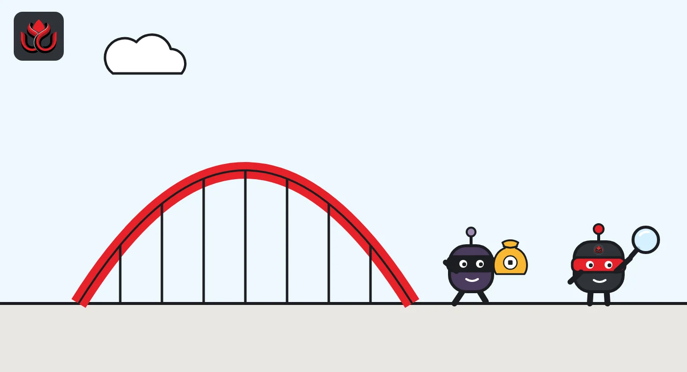
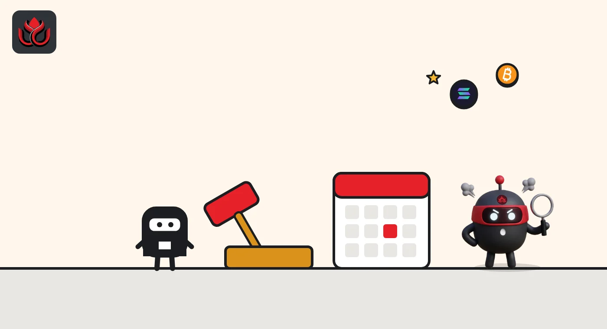

Four years after the Nomad Bridge hack, a man is extradited to the US over $2.89 million
Prosecutors say Alexander Gurevich ran four exploit transactions against the Nomad Bridge on August 1, 2022, taking 103 WBTC and 300 WETH. It is the second old DeFi exploit case to reach a US courtroom this month, three weeks after the Uranium Finance hacker's conviction was announced.
Key points
- The Justice Department said on October 30, 2026, that Israeli national Alexander Gurevich, 49, has been extradited and appeared in federal court in Northern California.
- A 2023 indictment accuses him of exploiting the Nomad Bridge smart contract on or about August 1, 2022, moving 103 WBTC and 300 WETH, about $2.89 million, to his own address.
- He was arrested in Israel in May 2025. The charges carry up to 20 years for money laundering. An indictment is only an allegation, and he is presumed innocent.
What happened
An Israeli man accused of draining about $2.89 million from the Nomad Bridge in 2022 is now in a US courtroom. The Justice Department said on October 30, 2026, that Alexander Gurevich, 49, had his first appearance in the Northern District of California after being extradited from Israel.
A 2023 indictment charges him over the Nomad exploit. A bridge is a service that lets users move tokens from one blockchain to another. It usually holds the deposited coins in a smart contract on one chain while it issues matching tokens on the other. That pool of locked coins makes bridges a favorite target.
Prosecutors say Gurevich exploited the Nomad Bridge's smart contract to take the funds. He has not been convicted. The department's release notes that an indictment is merely an allegation and that every defendant is presumed innocent until proven guilty.
What prosecutors say he did
According to the release, on or about August 1, 2022, Gurevich carried out four exploit transactions. Together they moved 103 WBTC and 300 WETH from Nomad's address to an address he controlled. WBTC and WETH are token versions of bitcoin and ether that work on Ethereum apps. Prosecutors value the haul at about $2,894,390.
The government says he then moved quickly to hide where the money came from. He allegedly swapped the funds into other cryptocurrencies, including bitcoin, and spread them over several addresses to conceal their source and ownership.
He faces counts of causing damage to a protected computer and interstate transportation of stolen money, each carrying up to 10 years in prison and a $250,000 fine. A money laundering count carries up to 20 years and a $250,000 fine. Actual sentences, if any, are set by a judge and are usually below the maximum.

What went wrong at Nomad in 2022
Nomad was a bridge between blockchains. On August 1, 2022, it lost about $190 million in locked funds, according to a technical analysis by Immunefi, a bug bounty platform. Immunefi says a routine upgrade to one of Nomad's contracts set an all-zero value as a trusted root. Because empty storage reads as zero, the bridge treated messages that had never been proven as valid, so withdrawals could be forged.
The first successful exploit transaction could be copied. Others resubmitted it with their own address in place of the attacker's, which turned the attack into a free-for-all. The $2.89 million in this case is a small slice of that total: the release ties Gurevich to four transactions only.
Timeline
Four exploit transactions move 103 WBTC and 300 WETH out of the Nomad Bridge, prosecutors say
Federal indictment filed against Gurevich
Gurevich arrested in Israel
Extradited to the United States; first court appearance in the Northern District of California
Justice Department announces the extradition

A long road to court
More than four years passed between the alleged theft and the first US court appearance. The FBI ran the investigation. The department credits its Office of International Affairs and Israeli authorities with substantial help, which is typical in cases where a suspect lives abroad and has to be extradited.
The case is being prosecuted by trial attorneys from the Computer Crime and Intellectual Property Section, the department's cybercrime unit, together with the US Attorney's Office in Northern California.
That pace is common in crypto crime. Blockchains record every transfer forever, so investigators can keep working on a trail years later. What takes time is tying an address to a real person, building a case and getting that person into a US court.
Second old DeFi case this month
The extradition comes three weeks after another DeFi exploit case reached a verdict. On October 7, federal prosecutors in Manhattan announced that a jury had convicted Jonathan Spalletta, 36, after a six-day trial, of computer fraud and money laundering over two 2021 attacks on Uranium Finance, a decentralized exchange.
Prosecutors said Spalletta took about $1.4 million on April 8, 2021, then about $53.3 million on April 28, 2021, by exploiting errors in the exchange's smart contracts. Uranium shut down for lack of funds. He laundered the money through the Tornado Cash mixer, they said, and spent some of it on rare collectibles. On February 24, 2025, law enforcement seized crypto worth about $31 million at the time.
Both cases rest on the same idea: using a bug in a smart contract to take money you were not entitled to can be charged as computer fraud and theft, whatever the code technically allowed. US Attorney Jamie McDonald put it plainly in the Spalletta release: "Spalletta's crimes cost real people to lose real money."
Sums named in two DeFi exploit cases, October 2026
US$ million
Sources: US Justice Department, October 30, 2026; US Attorney's Office SDNY, October 7, 2026
LC Insight analysis
This section is our reading of the facts above, not a statement of fact.
- We think these cases matter more for the message than the money. Calling an exploit a clever trade does not work as a defense in US courts so far, and that raises the cost of attacks on DeFi protocols.
- The likely result is that more old exploit cases will surface, because the evidence sits on a public ledger and does not expire. Arrests depend on international cooperation, which is slow but, as the Israel case shows, does happen.
- For victims, prosecution is not the same as restitution. Neither release says how much, if anything, will flow back to Nomad users.
What's next
- Gurevich's next hearing and his plea in the Northern District of California
- A sentencing date for Spalletta, which the October 7 release did not give
- Whether any seized funds are returned to Nomad or Uranium users
Disclaimer. This article is based on public information and the sources listed below as of the update time shown. It is for information only and is not investment, legal or tax advice. Figures may change as companies and authorities publish new data.
Sources
- US Justice Department, Israeli national extradited to face charges for stealing nearly $3M in virtual currency heist (October 30, 2026)
- US Attorney's Office SDNY, Jonathan Spalletta convicted of defrauding crypto exchange of over $50 million in hacks (October 7, 2026)
- Immunefi, Hack Analysis: Nomad Bridge, August 2022 (January 11, 2023)